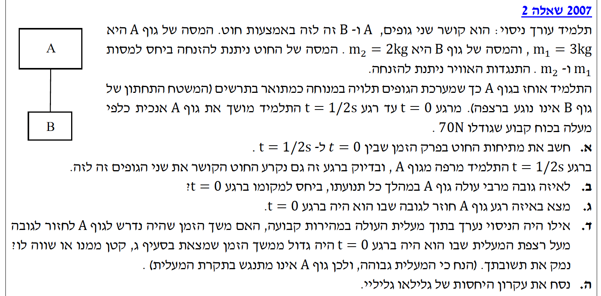
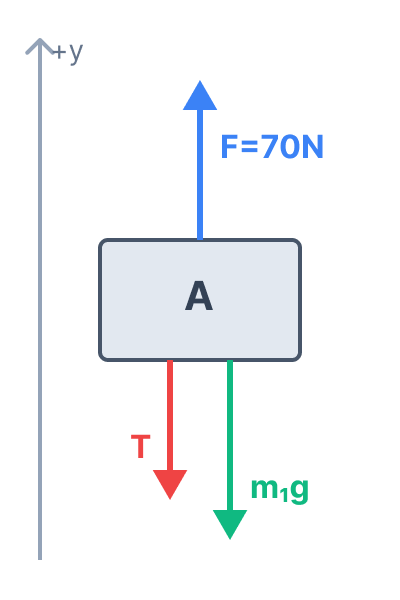
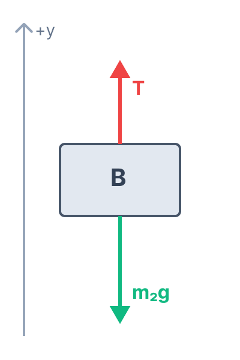

פתרון מודרך, צעד-אחר-צעד

מסת גוף A היא \( m_1 = 3\text{ kg} \). מסת גוף B היא \( m_2 = 2\text{ kg} \).
הגופים מתחילים ממנוחה, כלומר מהירות התחלתית \( v_0 = 0 \).
התלמיד מושך את גוף A כלפי מעלה בכוח קבוע \( F = 70\text{ N} \).
התנועה מתרחשת בפרק הזמן מ- \( t=0 \) עד \( t=0.5\text{s} \).
כל הנתונים כבר נתונים ביחידות תקניות (MKS), ולכן אין צורך בהמרה.
בחירת מערכת צירים: לפני שנקבע את סימני התאוצה והכוחות, חובה עלינו להגדיר את כיוון הציר החיובי. נבחר את הכיוון החיובי של ציר ה-\( y \) כלפי מעלה. מכיוון שכוח הכובד (ותאוצת הנפילה החופשית \( g \)) פועל תמיד כלפי מטה, תאוצת גוף הנמצא בנפילה חופשית תהיה מכוונת נגד הציר שבחרנו ולכן ערכה יהיה \( -g = -10\text{ m/s}^2 \).
אנו מתבקשים לחשב את המתיחות בחוט המחבר בין שני הגופים, שאותה נסמן באות \( T \), במהלך פרק הזמן בו מופעל הכוח העליון.
הפרדת המערכת: כדי להימנע מטעויות, תמיד נפריד את המערכת ונסרטט תרשים כוחות נפרד לכל גוף.


נרשום את משוואות החוק השני של ניוטון עבור כל גוף בנפרד (לאורך ציר \( y \)).
עבור גוף A, הכוח \( F \) פועל מעלה, בעוד כוח הכובד והמתיחות \( T \) פועלים מטה:
עבור גוף B, המתיחות \( T \) פועלת מעלה, וכוח הכובד פועל מטה:
נחבר את שתי המשוואות כדי לבטל את המתיחות \( T \) ולמצוא את התאוצה \( a \):
נציב את הנתונים (\( F = 70 \), \( m_1 = 3 \), \( m_2 = 2 \), \( g = 10 \)):
קיבלנו תאוצה חיובית, כלומר גודל המהירות של המערכת גדל כלפי מעלה. כעת נציב את התאוצה באחת המשוואות, למשל במשוואה של גוף B, כדי למצוא את \( T \):
התנועה מחולקת לשני שלבים.
שלב ראשון: מ- \( t=0 \) עד \( t=0.5\text{s} \). מצאנו שהתאוצה היא קבועה \( a_1 = 4\text{ m/s}^2 \) כלפי מעלה. המהירות ההתחלתית \( v_0 = 0 \) והמיקום ההתחלתי נקבע כ- \( y_0 = 0 \).
שלב שני: ברגע \( t=0.5\text{s} \), החוט נקרע והתלמיד עוזב את גוף A. כעת פועל על גוף A רק כוח הכובד, ולכן הוא נמצא בנפילה חופשית. כפי שהגדרנו מראש, הכיוון החיובי של הציר הוא כלפי מעלה, ולכן תאוצת הנפילה החופשית (המכוונת מטה) היא בהכרח שלילית: \( a_2 = -g = -10\text{ m/s}^2 \).
אנו מתבקשים למצוא את המיקום \( y \) הגבוה ביותר שגוף A יגיע אליו ביחס למקומו ההתחלתי (\( y=0 \)). בגובה המרבי, המהירות הרגעית של הגוף מתאפסת (\( v = 0 \)).
ננתח קודם את השלב הראשון כדי למצוא לאיזה גובה ומהירות הגיע הגוף ברגע \( t=0.5\text{s} \). המהירות בסוף השלב הראשון (\( v_1 \)):
הגובה בסוף השלב הראשון (\( y_1 \)):
כעת נעבור לשלב השני. נתוני ההתחלה של שלב זה הם נתוני הסיום של השלב הקודם: \( v_{0_{new}} = 2\text{ m/s} \) ו- \( y_{0_{new}} = 0.5\text{ m} \). התאוצה היא \( a_2 = -10\text{ m/s}^2 \). הגוף ממשיך לעלות עד שמהירותו מתאפסת (\( v_2 = 0 \)). נשתמש בנוסחה ללא זמן כדי למצוא את הגובה המרבי (\( y_{max} \)):
אנו יודעים כי מ- \( t=0 \) עד \( t=0.5\text{s} \) הגוף עלה מ- \( y=0 \) ל- \( y=0.5\text{m} \). לאחר מכן (השלב השני), הגוף נע בהשפעת כוח הכובד בלבד (\( a_2 = -10\text{ m/s}^2 \)), כשהוא מתחיל מגובה \( y_{0_{new}} = 0.5\text{ m} \) עם מהירות כלפי מעלה \( v_{0_{new}} = 2\text{ m/s} \).
אנו מחפשים את הזמן הכולל (הנמדד מהרגע \( t=0 \)) בו גוף A חוזר למקומו ההתחלתי, כלומר מתי המיקום הכולל חוזר להיות \( y = 0 \).
נחשב את משך הזמן של השלב השני, אותו נסמן כ- \( t_2 \). בשלב זה הגוף מתחיל מגובה \( 0.5\text{ m} \) ומסתיים בגובה \( 0\text{ m} \):
זוהי משוואה ריבועית. נכפיל ב-2 כדי לפשט את המקדמים:
נשתמש בנוסחת השורשים:
מכיוון שזמן חייב להיות חיובי, ניקח את השורש החיובי בלבד (\( \sqrt{56} \approx 7.48 \)):
זהו הזמן שחלף מרגע קריעת החוט. השאלה מבקשת את הזמן הנמדד מהרגע \( t=0 \), לכן נוסיף את הזמן של השלב הראשון (\( 0.5\text{ s} \)):
סעיפים אלו עוסקים במערכת ייחוס הנעה במהירות קבועה (מעלית) ומבקשים ליישם ולנסח במפורש את עקרון היחסיות של גליליי. נושא המהירות היחסית ועקרון היחסיות הוצאו מתוכנית הלימודים המעודכנת בפיזיקה לבתי הספר התיכוניים, ולכן אין צורך לפתור סעיפים אלו לבגרות הנוכחית.